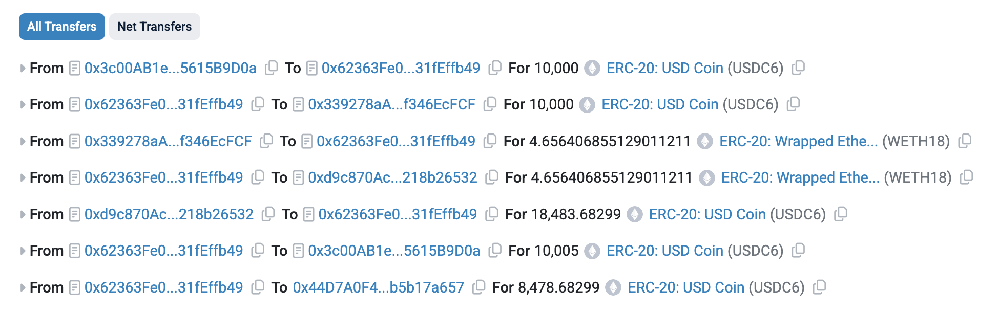
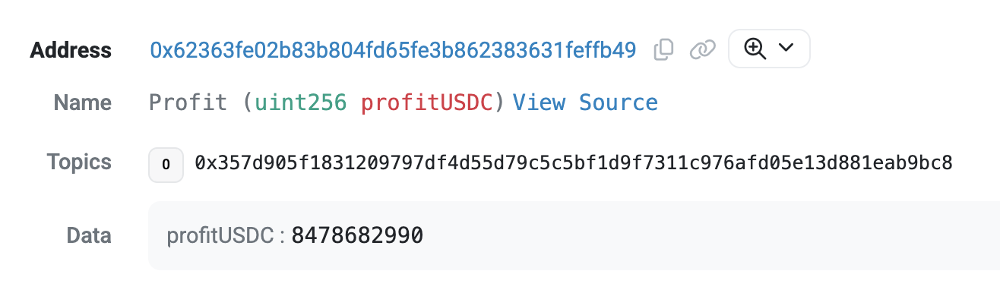

这是一个 DeFi 系列教程，在动手实践的过程中，学习和理解 DeFi 相关的概念与原理：
闪电贷套利是我们经常听到的一个词，在实际的场景中有很多种模式。基于我们之前的 AMM 合约，就足以让我们来模拟一个简单版本的闪电贷套利。
闪电贷的核心逻辑是，利用区块链智能合约的特性，在一笔交易内，借来大额资产（放大收益），拿着大额资产去执行别的操作，干什么都行，干完事情之后，再把借来的资金+少量手续费，原封不动还回去。因为智能合约是可以 revert 的，如果套利合约在执行过程中，发现最后套利没成功，可以回滚整个交易，除了手续费，没有额外损失。
我们接下来要模拟的场景时，有两个 AMM 池子，第一个池子的价格是 2000 USDC/WETH，第二个池子的价格是 4000 USDC/WETH。面对这样的场景，可以先想一下，不用闪电贷的情况下，应该如何套利。套利合约只不过是把我们的操作自动化了。
很简单，在第一个池子化 2000 USDC 买 1 个 WETH，到第二个池子上，直接就能卖出 4000 USDC，净赚 2000 USDC。
我们会用到两个合约 FlashLender.sol 和 FlashArbBorrower.sol。这两个合约代表两个角色，其中 borrower 就是套利合约，会从 lender 那里借出一些资金。
也就是说 lender 合约，是有 借出资产功能 的：
// 借出资产
require(t.transfer(receiver, amount), "transfer out");
// 调用 borrower 的回调函数
bytes32 magic = IFlashBorrower(receiver).onFlashLoan(token, amount, fee, data);
require(magic == keccak256("IFlashBorrower.onFlashLoan"), "bad callback");
// 验证在回调函数后，borrower 是否归还了本金+手续费
uint256 balAfter = t.balanceOf(address(this));
require(balAfter >= balBefore + fee, "not repaid");
关键就是这 3 行，先借出钱，然后回调，最后判断 borrower 是否还款。
在 borrower 的回调函数里，会写一些具体的 套利逻辑，比如从第一个池子买入 WETH，然后再卖到第二个池子：
// 从便宜的池子中买 WETH
uint256 wethOut = poolCheap.swap0For1(amount);
// 到贵的池子中卖 WETH
uint256 usdcBack = poolExpensive.swap1For0(wethOut);
// 还款给 lender
uint256 repay = amount + fee;
lender 和 borrower 是两个角色，那为什么不把这些逻辑写在一个合约里呢？如果写在一个合约里，意味着只有一个套利合约的角色，自己借钱出去、自己用钱套利，我自己都有钱了还借钱干嘛？
合约代码源文件在仓库：smallyunet/defi-invariant-lab@v0.0.4
克隆仓库：
git clone https://github.com/smallyunet/defi-invariant-lab/
git switch v0.0.4
cd defi-invariant-lab
部署合约：
forge create \
--rpc-url $RPC_URL \
--private-key $PK_HEX \
--broadcast \
contracts/amm/SimpleAMM.sol:SimpleAMM \
--constructor-args $USDC_ADDR $WETH_ADDR 30
部署后的合约地址：0xd9c870Ac0a84C3244286d39d870642d218b26532
这个 AMM_B 池子我们认为是价格比较高的池子，所以按照 4000 USDC/WETH 的价格注入初始流动性：
export AMM_B=0xd9c870Ac0a84C3244286d39d870642d218b26532
cast send $USDC_ADDR "approve(address,uint256)" $AMM_B \
0xffffffffffffffffffffffffffffffffffffffffffffffffffffffffffffffff \
--rpc-url $RPC_URL --private-key $PK_HEX
cast send $WETH_ADDR "approve(address,uint256)" $AMM_B \
0xffffffffffffffffffffffffffffffffffffffffffffffffffffffffffffffff \
--rpc-url $RPC_URL --private-key $PK_HEX
cast send $AMM_B "addLiquidity(uint256,uint256)" 4000000000000 1000000000000000000000 \
--rpc-url $RPC_URL --private-key $PK_HEX
部署合约：
forge create \
--rpc-url $RPC_URL \
--private-key $PK_HEX \
--broadcast \
contracts/flash/FlashLender.sol:FlashLender \
--constructor-args 5
部署后的合约是：0x3c00AB1eD5dF40f7ae8c1E4104C89445615B9D0a
验证合约：
forge verify-contract \
--chain-id 11155111 \
0x3c00AB1eD5dF40f7ae8c1E4104C89445615B9D0a \
contracts/flash/FlashLender.sol:FlashLender \
--constructor-args $(cast abi-encode "constructor(uint16)" 5) \
--etherscan-api-key $ETHERSCAN_API_KEY
给 lender 转 20 万 USDC 作为初始资金：
export LENDER=0x3c00AB1eD5dF40f7ae8c1E4104C89445615B9D0a
cast send $USDC_ADDR "approve(address,uint256)" $LENDER \
0xffffffffffffffffffffffffffffffffffffffffffffffffffffffffffffffff \
--rpc-url $RPC_URL --private-key $PK_HEX
cast send $LENDER "fund(address,uint256)" $USDC_ADDR 200000000000 \
--rpc-url $RPC_URL --private-key $PK_HEX
部署合约：
forge create \
--rpc-url $RPC_URL \
--private-key $PK_HEX \
--broadcast \
contracts/flash/FlashArbBorrower.sol:FlashArbBorrower \
--constructor-args $LENDER $USDC_ADDR $WETH_ADDR $AMM_ADDR $AMM_B
部署的合约地址是：0x62363Fe02b83b804fd65FE3b862383631fEffb49
验证合约：
forge verify-contract \
--chain-id 11155111 \
0x62363Fe02b83b804fd65FE3b862383631fEffb49 \
contracts/flash/FlashArbBorrower.sol:FlashArbBorrower \
--constructor-args $(cast abi-encode "constructor(address,address,address,address)" $LENDER $USDC_ADDR $WETH_ADDR $AMM_ADDR $AMM_B) \
--etherscan-api-key $ETHERSCAN_API_KEY
直接调用 execute 函数：
export ARB=0x62363Fe02b83b804fd65FE3b862383631fEffb49
cast send $ARB "execute(uint256)" 10000000000 \
--rpc-url $RPC_URL --private-key $PK_HEX
我发起的交易哈希是：0x948edfb7eeb5ceb924c1eb39704efd952f1cd3ed435c059a548dd7ea82031f15
浏览器的交易过程比较直观，直接看浏览器的记录就好了：
可以看到在第一个池子里，用 10000 USDC 买了 4.6 个 WETH，紧接着把 WETH 卖掉，换出了 18000 USDC，净赚 8000 USDC。
borrower 的合约里有写把收益金额 emit 为事件：
uint256 profit = usdcBack - repay;
if (profit > 0) {
require(usdc.transfer(owner, profit), "payout fail");
emit Profit(profit);
}
所以在浏览器上也能看到真的 触发了事件：
